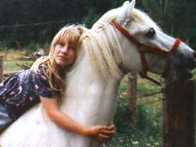
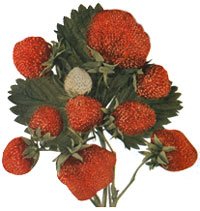
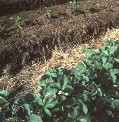
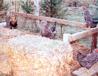

The Price Of Fresh Strawberries
Tips for growing the favorite fruit of the summer.
By the Mother Earth News editors
April/May 1994
Seasons of the Garden
Jeff Taylor goes to garden school and graduates with some of the best fruit of the season.
They call the last months of winter the Hungry Gap, which should answer any questions you've had about the names of small towns all over the United States. It's a time when you almost recall what fresh food used to taste like, eaten outdoors in the warm sunshine. You begin to smell an odd smell, doubtless only your air freshener or something equally prosaic, but for some reason it reminds you of strawberries. With the walls pressing in from the weight of a crushing winter, you cannot remember the last time you tasted one.
By early spring, you want. ..no, by God, you need a bowl of fresh strawberries cut up into small pieces with a light sprinkling of sugar. And just this once, aroint the cholesterol, you want those suckers smothered in cream. Maybe a few bananas slices, too. And some blueberries...
Sure, you could go to the supermarket and buy some out-of-season cardboard pink fruitoids, partly ripened; but they wouldn't be real strawberries.
All right. Patience is a virtue. You can wait until they return again in the straw berry beds of the garden-they're perennials, aren't they?
For several years, our backyard has erupted in a bloody riot of strawberries, and one would assume these hardy perennials would be good for yet another season. But it's not that simple; gardens have rules of their own. Upon investigation-meaning when I ask my wife, joy, the master gardener and chief horticulturalist on our little acreage-I find that many of our old runner plants are somehow all used up or have reverted to outlaw. We will need new plants, apparently.
In gardening, the most obvious facts do not necessarily mean anything. An obvious fact: Strawberries are studded with thousands of visible seeds. "So" I ask her, "can we just grow some new strawberry, uh, cultivars from seeds?"
In the beginner's mind there are many possibilities; in the expert's mind there are few.
- Zen Proverb
Joy looks up in surprise from the seed catalog; sometimes she forgets that I'm a nongardener. "It might be possible," she patiently explains, "but it would be like whittling toothpicks out of boards when you can buy 500 of them for a buck:" Fair enough. We won't be cutting up strawberries and planting the eyes like seed potatoes. Instead, we'll buy new strawberry plants from a nursery. Joy has heard good things about Tri-Star, which I gather is some kind of semiperpetual strawberry that thrives in the Northwest. "That one's a day-neutral," Joy says. A question mark forms above my head.
Wishing to fill some of the knowledge gap between us, I ask for a quick summary of strawberry knowledge, something I can absorb and retain without dozing off from sheer boredom. At this point, Joy fills my arms with strawberry literature, saying something about how study is half the work of gardening, knowledge always precedes action, etc. After hours of diligent research, I learn the following:
"Strawberries are one of the easiest berries for the amateur to cultivate, provided you're willing to sweat a bit," Joy tells me as she hands over a seed packet. "You have to start with certified, disease-free plants from the three types: Everbearers, day-neutrals, and Junebearers:" After a few moments of explanation, those long-elusive terms become clearer to me. Everbearers produce two crops, in midsummer and early fall; day-neutrals produce through the growing season; and June-bearers produce only one stupendous crop (take a wild guess when.) You'll need to pinch off the first flowers of everbearers and day-neutrals so they don't use up their strength before they're established, and be careful not to let the June-bearers bear fruit at all in the first year.
An expert is nothing but a damned fool a long way from home.
-Carl Sandburg
"June-bearers generally produce more runners (and more berries) than everbearers and day-neutrals, which grow best in hills, pyramid planters, barrels, hanging baskets, etc. It is important to set June bearers 18 to 24" apart in a row or raised bed, leaving about three feet between rows. The runners that form from the mother plants will form a matted row. Ideally, you will get about five runner plants per square foot of matted row. Chop off late runners after you attain this density and remove all the runners that have not rooted by the first of September. If all goes well, you'll have a whopping crop of big juicy strawberries from the June-bearers:'
But not, I regret to say, until the following year. It's worth the wait. Meantime, you have the smaller berries of the everbearers and day-neutrals, which can be harvested through the first growing season.
Defending these tender little kids is my specialty. There are many, many things that can ruin a strawberry crop: too much sun, too little rain, bugs (including sawflies, root weevils, aphids, spider mites, and nematodes), root rot, fungus infections, or something else entirely. A winter cover crop of rye on the strawberry beds will help reduce black root for some sound scientific reason, no doubt, but do we really care, so long as it works?
Strawberries are prone to leaf scorch and leaf spot, with their characteristic purple spots. These fungal diseases usually appear in the hot and humid months, and can reduce yields by 20 percent. Cut off all the leaves immediately, and you'll stand a good chance of saving the plantings. You can use a lawn mower, set high to take only the leaves. And next time, space those plants far enough apart so the leaves can dry out. The pathogen likes wet leaves.
There are lots of caveats and wherefores about growing strawberries, most of which are fairly simple. It starts to get interesting when I read about companion planting for strawberries and the organic ways to keep the bugs from eating them. Bush beans make good companion crops because of their nitrogen-fixing rhizomes and the fact that bean and strawberry roots grow at different depths. The wise gardener will also plant a sizable border of marigolds around the beds. A marigold perimeter kills off nematodes, those microscopic worms that live in the soil and suck root cells dry, and marigolds also repel other insect pests.
But not, unfortunately slugs. It would be wonderful to kill every slug in creation, but it simply isn't possible because the buggers enter your garden at night while you're asleep. You can set out beer traps, of course, or sandpaper. But for something more permanent, you might try a contiguous perimeter of 1/2," copper pipe around your strawberry beds, connecting the sections with sleeves and elbows; slugs and snails hate to cross copper.
God the first garden made, and the first city Cain.
- Abraham Cowley
Everybody hates slugs. Locally, a neighbor surrounds his entire garden with sections of plastic gutter, along the bottom of which he pours an inch-thick river of rock salt. Another sprinkles ground or grated ginger around her beds. Slugs hate ginger even more than they love strawberries. But ginger, garlic, and salt all wash away in the rain. The copper pipe idea seems the most workable, and that's the one I used this year. No invaders yet, and joy looks at me admiringly these days.
Joy's favorite mulch for strawberries, which prefer slightly acidic soil, is pine needles. They also like lots of organic material, best when applied to the soil the previous fall so it can rot, but good anytime in the spring. ( We all know what kind of nitrogen-rich organic material we're talking about here, right? Look under "horse:" This is the reason you should wash your strawberries after harvest, and no true gardener ever forgets. Our daughter has a pony, and we keep chickens; chicken and horse manure are the gold and silver standard of strawberry gardening. Seen from a certain perspective, it's beautiful stuff.)
Don't give up now. Fresh strawberries, remember? And quite apart from the daily fresh air and exercise, you will find that eating strawberries promotes good health-not usually true of the good things in life, such as coffee, beer, and chocolate. Like raspberries and blueberries, strawberries contain ellagic acid, which medical studies show inhibits cancers caused by environmental toxins, such as the preservatives and pesticides in coffee, beer, and chocolate.
Like figs, grapes, melons, and a few others, strawberries will get no sweeter after picking. If you want to know why, you'll need to learn the word "climacteric," referring to those fruits that do get sweeter after picking. Strawberries are, obviously, nonclimacteric, a fact you can use around other gardeners to astound them with your berry wisdom and celerity at Scrabble.
In climates like western Oregon, strawberry plants seldom need protection from cold, but in colder areas, it won't hurt to put several inches of loose straw around them. Cover the beds during the night with plastic, if you like, and rip it off again first thing in the morning, because slugs love any warm areas next to strawberry plants. If you find one, remember that dawn is traditional for executions. Keep saying, "Live, strawberries/ Die, slugs" to yourself, or you might lose heart after all this work and murder.
A final fact about strawberries: They are shallow-rooted and therefore should never be stressed by lack of water. The first watering is the most important; the plants need one inch of water per week during the growing season. For big berries swollen to maximum size, make sure the soil is moist (but not too moist) from bloom to harvest. After that, plant growth resumes and the flower buds form, new life for the next season.
June is time to harvest. The smell of strawberries is no longer a winter hallucination, but a veritable cloud of strawberry musk you can detect from 10 feet away. It will get stronger through the summer. Gather the ripe berries in the morning, so they'll keep longer, and collect them every morning in hot weather; overripe berries attract disease. Don't wash your strawberries until the moment you're ready to use or eat them.
These are the general strawberry rules for the coastal mountains of Oregon, an area that has a moderate (but wet) climate with late frosts and short winters. Cultivars that do well here include Olympus, Rainier, Ozark Beauty, Tillikum, and Tristan If you live in a colder or drier climate, check with the county extension agent in your area to learn the kinds of strawberries that will grow in your garden.
|
Jeff and Joy Taylor in the Blodgett, Oregon, home. |
 Jeff and Joy's daughter, Ren, and her faithful steed, Silver, trotting a safe distance from the garden. |
 Set June bearers 18 to 24"" apart in a row or a raised bed, leaving about three feet between rows. |
|
 |
 |
 |